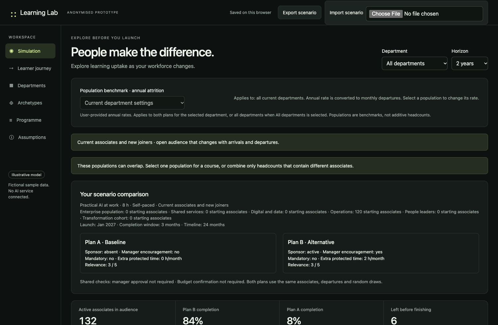
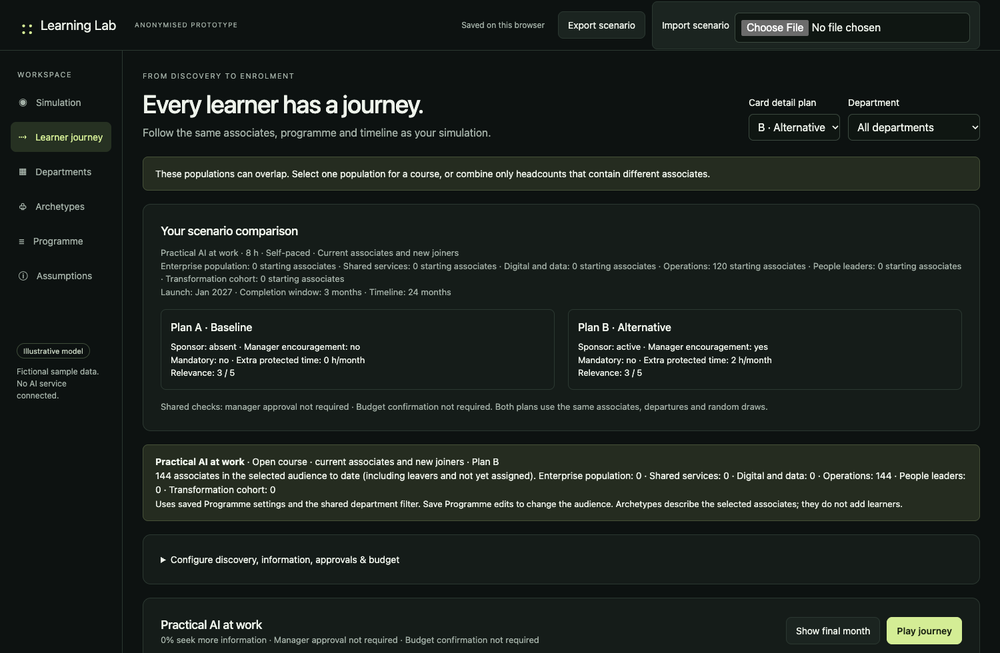

Exploratory prototype · Illustrative data
Can AI rehearse
a learning launch?
What if a learning team could explore how a large population might move from invitation to completion before committing to a full launch?
From hypothesis to prototype
We did not stop at the idea.
We built a working Learning Lab prototype to examine the hypothesis. It creates an illustrative learner population, follows the same people through two launch plans and makes each learner’s modelled decisions visible over time.
The next step is to compare its outputs with real historical outcomes and learn whether the assumptions reflect what actually happens.
The demonstration below uses fictional labels and illustrative values. It contains no organisation or HR-system data.
Open the anonymised prototype ↗The original question was simple: could we use historical patterns and explicit assumptions to rehearse a learning launch?
The prototype simulates a population of individual learners. Some open the first communication, some ignore it, some click but do not register, some start and pause, and some complete. People can also join the organisation or leave before completing the programme.
This is not a claim that AI can predict exactly what every person will do. It is a way to expose assumptions, explore possible outcomes and identify where a learner journey may lose momentum.
Screens from the working build
The test makes both the system and the learner visible.


What the model follows
One journey, many possible decisions.
Inside the test
Three views make the hypothesis possible to examine.
Change the conditions
Active sponsor On
Manager encouragement On
Protected time 2 hours
Course relevance 4 / 5
Change the environment
Test sponsorship, manager support, protected time, relevance and whether participation is mandatory.
Follow individual behaviour
Compare the same simulated people across both plans instead of comparing two unrelated averages.
Plan comparison
Compare possible outcomes
See where conditions change discovery, registration, progress and completion across the launch timeline.
What the prototype can explore
The working model turns the hypothesis into something we can investigate.
- The same learner identities remain in Plan A and Plan B.
- Learners can discover, consider, register, seek approval, start and complete.
- Joiners and leavers change the active population over time.
- Closed cohorts and open audiences behave differently.
- Department filters and learning-capacity constraints affect the illustrative outputs.
- Blocked approval scenarios make friction visible.
Variables worth discussing
Success depends on more than the course.
Communication
Did the invitation reach the learner, and did it feel relevant enough to open?
Time
Can people make progress after existing workload and mandatory learning?
Managers
Do managers encourage participation or create another approval gate?
Sponsorship
Is the programme visible, credible and connected to organisational priorities?
Population change
How do new joiners, role changes and leavers reshape the reachable audience?
Relevance
Does the experience solve a problem the learner recognises in their work?
The important boundary
This is a rehearsal, not a prediction engine.
Before calling these forecasts, the model needs comparison with real historical outcomes. Even then, outputs should be ranges rather than promises. Historical patterns may not continue, correlation does not establish causation, inputs must be aggregated and governed, and human judgement remains essential.
The value is in finding weak assumptions and asking better questions before investing in a full launch.
The interesting question is not whether AI can create a perfect model of the future.
It is whether learning teams can rehearse a launch, explore different conditions and identify likely barriers while there is still time to change the design.